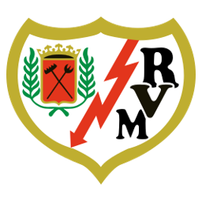
RVEl club de barrio
Rayo Vallecano
1924
Año de fundación del club
Franjirrojos
Una breve historia
Fundado en 1924 en el barrio obrero de Vallecas, el Rayo es célebre por su fuerte identidad social y vecinal, con una afición volcada en causas solidarias. Ha alternado temporadas en Primera y Segunda a lo largo de su historia.
Fieles a los colores
de Madrid
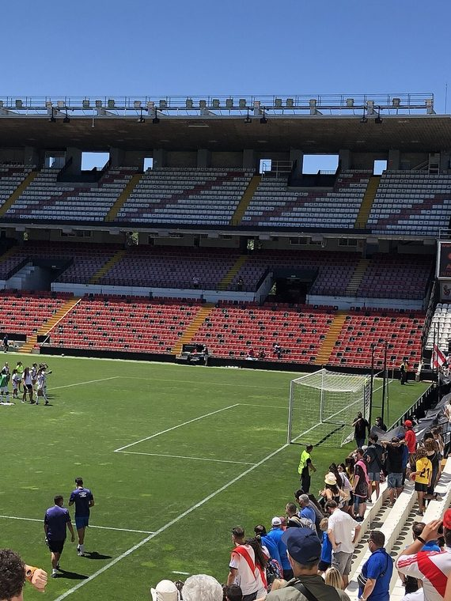
📷Foto pendiente
(rayo-vallecano-1.jpg)';" />
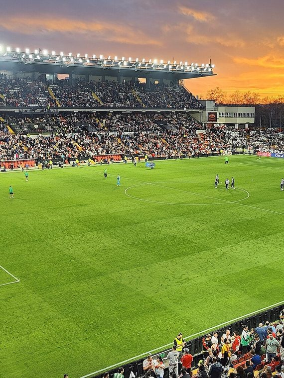
📷Foto pendiente
(rayo-vallecano-2.jpg)';" />
Títulos y logros
Momentos que hicieron historia
★
Semifinalista de la Copa de la UEFA en 2000/01
★
Símbolo del fútbol popular y de barrio en Madrid
★
Una de las aficiones más comprometidas socialmente de LaLiga
La rivalidad
El duelo que enciende a la afición
Temporada 2026 / 27
Plantilla del primer equipo
Datos de ejemplo — reemplázalos con la plantilla real en data/teams.js.
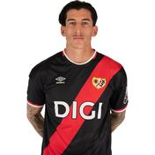
🧑';" /> Cárdenas Portero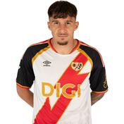
🧑';" /> Andrei Defensa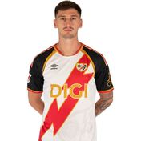
🧑';" /> Kumbulla Centrocampista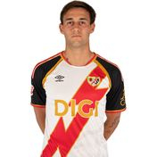
🧑';" /> Pedro Díaz Centrocampista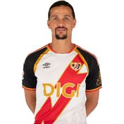
🧑';" /> Luiz Felipe Defensa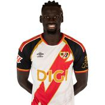
🧑';" /> Pathé I. Ciss Centrocampista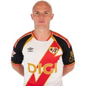
🧑';" /> Isi Centrocampista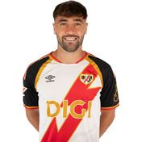
🧑';" /> Unai Lopez Centrocampista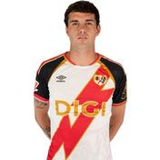
🧑';" /> Camello Delantero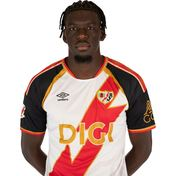
🧑';" /> Nteka Centrocampista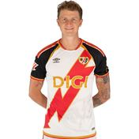
🧑';" /> Pelayo Defensa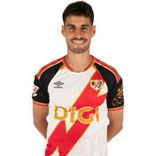
🧑';" /> Óscar V. Centrocampista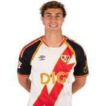
🧑';" /> Lozano Defensa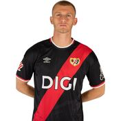
🧑';" /> Adrián Molina Portero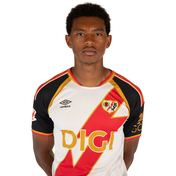
🧑';" /> Jozhua V. Defensa Rdt
Delantero
Rdt
Delantero